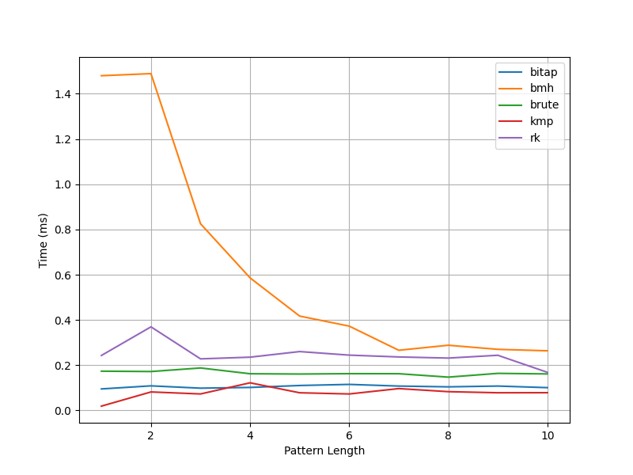
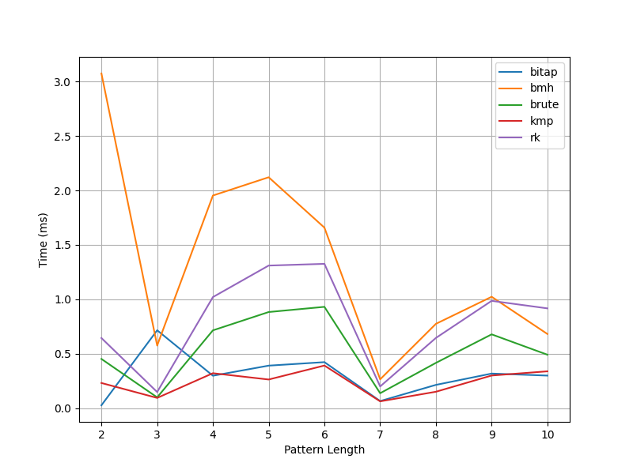

Analysis of various algorithms used for exact pattern matching. The analysis involves analyzing the time complexity by measuring the time taken by each algorithm to find the first occurrence of the given pattern in the given text. The scenarios where pattern does not appear in the text are not considered as they won’t tell us about the time taken (and number of comparisons) because pattern match would fail at the first comparison and the algorithms under consideration will move ahead in the text.
For the solution, I am using three algorithms:
Each algorithm is run with the same text and pattern. Each iteration of the experiment is done on the same machine. I analyze the algorithms by considering two scenarios.
A random string of length 10,000 ASCII characters is characters. The initial test string is created without the letters - a, b, c, d, e, f, g, h, i, j. The letters in the initial string at three sets of fixed position are then replaced with “abcdeabcdefghij”. The three position sets are: index 500 to 515, index 5000 to 5015, index 9000 to 9015. These ranges are chosen to analyze the algorithms where pattern is found in beginning, middle, and end of the large text. The pattern to be searched ranges with length 2 - 10. For example “ab”, “abc”, “abcd”, and so on up to “abcdefghij”. The test has just once occurrence of each pattern. The final results for each set of indices and each pattern length are then averaged in an effort to analyze the time complexity when the pattern is spread across the entire text.
In this setup, a long text is chosen. The patterns to be searched are of the length 2 - 10. For each length, 50 words are selected from the English dictionary. Each algorithm searches for the same pattern in the same text.
Random Strings 
English Strings 
As per the observations, in both test settings KMP performs the best in both these test setups. The BMH algorithm performed poorly in this setup.
The reason for this observation is that:
In general, it is noticeable from both the graphs, that brute force algorithm performance is better than both Rabin Karp and BMH algorithms. This shows that depending on the problem, brute force algorithm might be a better choice.
Overall, the performance of these algorithms depends on the characteristics of the specific problem being solved. It is important to consider the properties of the text and pattern when selecting an algorithm for string matching
Source Code is present here.